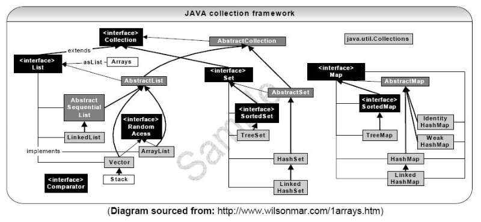
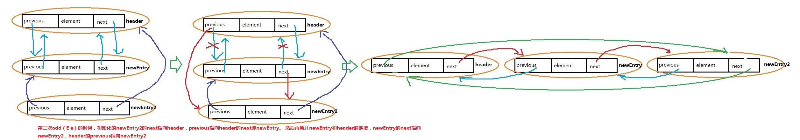
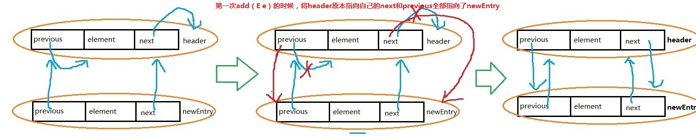

关于JAVA的集合，首先了解下集合的类图：

这里把集合Collection和Map放在一起了，但是Collection都实现Iterable接口，用于迭代器迭代，而Map则是键值对的形式。
主要常用的实现类如下：
Collection:
Vector
ArrayList
LinkedList
TreeSet
HashSet
Map：
TreeMap
HashMap
1、Vector
public class Vector<E> extends AbstractList<E> implements List<E>, RandomAccess, Cloneable, java.io.Serializable
Vector是线程安全的集合，主要原因是因为它的add()方法上加了Synchronized。这是它与arraylist的一个主要区别。默认数组长度为10。
public synchronized boolean add(E e) {//synchronized线程安全
modCount++;
ensureCapacityHelper(elementCount + 1);
elementData[elementCount++] = e;
return true;
}
private void ensureCapacityHelper(int minCapacity) {
int oldCapacity = elementData.length;
if (minCapacity > oldCapacity) {//对原长度进行判断
Object[] oldData = elementData;
int newCapacity = (capacityIncrement > 0) ?
(oldCapacity + capacityIncrement) : (oldCapacity * 2);//若增长系数不为0，则增长一个增长系数，否则原长度X2
if (newCapacity < minCapacity) {
newCapacity = minCapacity;
}
elementData = Arrays.copyOf(elementData, newCapacity);
}
}
Vector的实现基于它的内部3个属性：
Obeject[] elementData 用于存放放入该集合的具体元素。
int elementCount 元素个数，每次add时都会增长。
int capacityIncrement 容器增长系数，默认为0。每次add元素的时候，都会对添加后的长度进行判断，若添加元素后的长度大于原来的长度，则对增长系数进行判断，若增长系数<=0，则原长度X2，否则长度增长一个增长系数。
Vector正常情况下使用较少，因为它线程安全，需要更大的系统开销，所以除非必须考虑线程安全相关，否则不建议使用。
2、ArrayList
public class ArrayList<E> extends AbstractList<E> implements List<E>, RandomAccess, Cloneable, java.io.Serializable
ArrayList实现原理与Vector基本一致，初始长度为10，无增长系数，每次add元素的时候，会对内部数组进行长度判断，若长度不够，则将原来的长度X1.5+1。
ArrayList并非线程安全的，所以访问效率要比Vector高。
Obeject[] elementData 用于存放放入该集合的具体元素。
int size 集合长度，每次add时都会增长。
public boolean add(E e) {
ensureCapacity(size + 1); // Increments modCount!!
elementData[size++] = e;
return true;
}
public void ensureCapacity(int minCapacity) {
modCount++;
int oldCapacity = elementData.length;
if (minCapacity > oldCapacity) {
Object oldData[] = elementData;
int newCapacity = (oldCapacity * 3)/2 + 1;//若原长度足够则不做处理，若不够，则X1.5+1
if (newCapacity < minCapacity)
newCapacity = minCapacity;
// minCapacity is usually close to size, so this is a win:
elementData = Arrays.copyOf(elementData, newCapacity);
}
}
但是对于Vector和ArrayList而言，存放数据的都是Object[]，所以在插入或删除指定元素的时候，都需要对Object[]进行复制、移动，代价较大。所以适合遍历和随机查找。
此处以ArrayList的add(int index, E element)为例：
public void add(int index, E element) {
if (index > size || index < 0)
throw new IndexOutOfBoundsException(
"Index: "+index+", Size: "+size);
ensureCapacity(size+1); // Increments modCount!!
System.arraycopy(elementData, index, elementData, index + 1,
size - index);//这里需要对原数组进行复制和移动，来保证插入位置的数据全部后移，腾出一个位置给新的元素。
elementData[index] = element;
size++;
}
删除操作以及Vector的插入指定位置元素和删除指定位置元素和这里的操作基本一致，也就不再赘述。
3、LinkedList
public class LinkedList<E> extends AbstractSequentialList<E> implements List<E>, Deque<E>, Cloneable, java.io.Serializable
针对与list中的Vector和ArrayList在指定位置的查询和删除功能上效率较低的问题，JAVA提供了一个新的集合类LinkedList，它使用的是双向链表式。
首先看一下它的参数：
Entry<E> header = new Entry<E>(null, null, null);
int size = 0;
这里的size表示LinkedList的大小,header表示链表的表头，而表头是LinkedList内部定义的一个内部类Entry，作为节点对象。
Entry的定义如下：
private static class Entry<E> {
E element; //元素节点
Entry<E> next;//下一个元素对象
Entry<E> previous;//上一个元素
Entry(E element, Entry<E> next, Entry<E> previous) {
this.element = element;
this.next = next;
this.previous = previous;
}
}
那LinkedList是如何通过entry对象来实现双向链表结构的呢，这里通过add(E e)方法的源码来具体分析：
public boolean add(E e) {
addBefore(e, header);
return true;
}
private Entry<E> addBefore(E e, Entry<E> entry) {
//新建一个Entry实体对象，在构造方法中将header指定为它的next成员变量，header的previous对象指定为自己的previous成员变量
Entry<E> newEntry = new Entry<E>(e, entry, entry.previous);
//让自己的前一个对象的next指向自己
newEntry.previous.next = newEntry;
//让header的previous指向自己
newEntry.next.previous = newEntry;
size++;
modCount++;
return newEntry;
}
值里光从代码还是比较难看的出它的具体实现过程的，通过下面的两幅流程图可以更清晰的看出第一次add(E e)和第二次add(E e)的具体实现过程。
第一次add:

第二次add:

理解了LinkedList的双向链表结构，那么它的删除操作已经其他的添加操作也就不难理解了，至于查询操作，无非也就是迭代，也不再赘述。